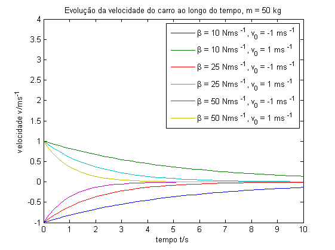

Contents
% Cadeira de Modelação e Simulação % % 1º Trabalho de laboratório % Simulação básica em Matlab/Simulink % % Turno: 4ª feira, das 9h às 11h % % Elementos do grupo: % Gonçalo Vítor Nº73229 % Catarina Cruz Nº73319 % Diogo Brás Nº68212
Ex. 1 - Simulação do movimento livre de uma viatura
close all clear all v0 = [-1 +1]; y0 = 1; stop_time = 10.0; m = 50; beta = [10 25 50]; vlegend = cell(1, size(beta, 2)*size(v0,2)); plegend = cell(1, size(beta, 2)*size(v0,2)); vdata = cell(1, size(beta, 2)*2); pdata = cell(1, size(beta, 2)*2); for i = 1:size(beta, 2), sim('carro'); vdata{2*i-1} = t; vdata{2*i} = v; pdata{2*i-1} = t; pdata{2*i} = y; for z=1:size(v0, 2), vlegend{size(v0,2)*(i-1)+z} = sprintf('\\beta = %d Nms ^{-1}, v_{0} = %d ms ^{-1}', beta(i), v0(z)); plegend{size(v0,2)*(i-1)+z} = sprintf('\\beta = %d Nms ^{-1}, v_{0} = %d ms ^{-1}, y_{0} = %d m', beta(i), v0(z), y0); end end figure(1); plot(vdata{1:size(vdata,2)}) title(sprintf('Evolução da velocidade do carro ao longo do tempo, m = %d kg', m)) xlabel('tempo t/s') ylabel('velocidade v/ms ^{-1}') ylim([-1 +4]) legend(vlegend, 'location', 'NorthEast'); figure(2); plot(pdata{1:size(pdata,2)}) title(sprintf('Evolução da posição do carro ao longo do tempo, m = %d kg', m)) xlabel('tempo t/s') ylabel('posição y/m') ylim([-6 +20]) legend(plegend, 'location', 'NorthEast'); % Os resultados obtidos tanto para a posição, como para a velocidade % obtidos por simulação estão de acordo com os previstos teoricamente.
Ex. 2 - Simulação de um modelo predador-presa
Ex2.2
y=zeros(6,1);
M1=[1 1 1 1;
1 1 1 1;
-1 -1 -1 -1;
1 1 1 1;
1 1 1 1;
1 1.1 0.5 0.1];
M2=[1 1 1 1;
1 1 1 1;
-2 -2 -3 -3;
2 4 6 6;
1 3 4 9;
1 3 4 9];
% As colunas de M1/M2 correspondem aos valores dos parâmetros a fornecer
% à simulação. Iterar pelas colunas da matriz fornece então os város
% exemplos necessários
%
% As primeiras duas linhas correspondem a alfa1 e alfa2, que neste
% exercício devem ser mantidos a 1
for y=M1
alpha1=y(1);alpha2=y(2);delta1=y(3);delta2=y(4);N1_0=y(5);N2_0=y(6);
options = simset('SrcWorkspace','current');
sim('function_teste',[],options);
figure;
hold on;
plot(tout,n1,'b');
plot(tout,n2,'g');
title(['Modelo predador presa (2.2) - variação das condições iniciais\newline\alpha_1=',num2str(alpha1),' \alpha_2=',num2str(alpha2),' \delta_1=',num2str(delta1),' \delta_2=',num2str(delta2),' N_1(0)=',num2str(N1_0),' N_2(0)=',num2str(N2_0),' Ponto de Equilíbrio: N_1=',num2str(-delta1/alpha1),' ; N_2=',num2str(delta2/alpha2)]);
legend('N_1','N_2');
m=max(max(n1),max(n2))+1;
axis([0 10 0 m]);
xlabel('Time (t)');
ylabel('N_1 / N_2');
hold off;
end

A partir dos primeiros gráficos, pode concluir-se o seguinte
- Quando ambas as condições iniciais correspondem ao equilíbrio, as populações nunca oscilam e mantêm sempre o equilíbrio (assumimos que não há perturbações), tal como esperado
- Ao "desequilibrar" uma das condições iniciais, as populações passam a seguir um modelo oscilatório, sendo que o aumento da amplitude das populações torna mais visível a variação lenta perto dos mínimos e rápida perto dos máximos, tal como esperado da análise teórica
- Ao manter um dos valores iniciais no equilíbrio, o outro valor inicial passa a definir o máximo ou o mínimo, conforme acima ou abaixo do valor de equilíbrio, respectivamente
for y=M2 alpha1=y(1);alpha2=y(2);delta1=y(3);delta2=y(4);N1_0=y(5);N2_0=y(6); options = simset('SrcWorkspace','current'); sim('function_teste',[],options); figure; hold on; plot(tout,n1,'b'); plot(tout,n2,'g'); title(['Modelo predador presa (2.2) - variação dos pontos de equilíbrio/máximos/mínimos\newline\alpha_1=',num2str(alpha1),' \alpha_2=',num2str(alpha2),' \delta_1=',num2str(delta1),' \delta_2=',num2str(delta2),' N_1(0)=',num2str(N1_0),' N_2(0)=',num2str(N2_0),' Ponto de Equilíbrio: N_1=',num2str(-delta1/alpha1),' ; N_2=',num2str(delta2/alpha2)]); legend('N_1','N_2'); m=max(max(n1),max(n2))+1; axis([0 10 0 m]); xlabel('Time (t)'); ylabel('N_1 / N_2'); hold off; end
Nestes exemplos podem ver-se essencialmente os efeitos da variação dos parâmetros alfa e delta em particular, mantendo as condições iniciais iguais.
- É de notar o afastamento das soluções com o afastamento dos valores de delta, o que demontra a dependência directa entre este parâmetro e o valor de equilíbrio (mantendo alfa constante)
- Entre os dois últimos gráficos pode notar-se a diferença das amplitues face à variação simultânea das condições iniciais
- O primeiro caso representa uma situação em que o valor inicial é superior ao valor de equilíbrio da população de presas e inferior ao da população de predadores
- No segundo caso o valor inicial é superior a ambos os pontos de equilíbrio)
Em relação ao gráfico obtido em 2.1, podemos verificar a semelhança na forma da variação das populações, fazendo-se uma comparação directa com o primeiro do segundo grupo de figuras, pois os valores utilizados para os parâmetros são os mesmos.
Ex2.3 - a)
%Tentativa 1 y1=[1.2;1.2;-1.2;2.3;10;10]; %Tentativa 2 y2=[1.2;1.2;-1.2;2.3;1.9167;10]; %Tentativa 3 y3=[0.6;1.2;-1.2;2.3;1.9167;10]; %Tentativa 4 y4=[0.55;1.2;-1.2;2.3;1.9167;10]; y=zeros(6,1); M=[y1 y2 y3 y4]; for y=M alpha1=y(1);alpha2=y(2);delta1=y(3);delta2=y(4);N1_0=y(5);N2_0=y(6); load('presas.mat'); options = simset('SrcWorkspace','current'); sim('function_teste', tr,options); figure; hold on; plot(tout,n1,'b'); plot(tout,n2,'g'); plot(tr,yr,'r'); title(['Modelo predador presa (2.3) - Cálculo de modelo por tentativa\newline\alpha_1=',num2str(alpha1),' \alpha_2=',num2str(alpha2),' \delta_1=',num2str(delta1),' \delta_2=',num2str(delta2),' N_1(0)=',num2str(N1_0),' N_2(0)=',num2str(N2_0),'\newlinePonto de Equilíbrio: N_1=',num2str(-delta1/alpha1),' ; N_2=',num2str(delta2/alpha2)]); legend('N_1','N_2','N_2(file)'); m=max(max(n1),max(n2))+1; axis([0 20 0 m]); xlabel('Time (t)'); ylabel('N_1 / N_2'); hold off; end
Figura 9: Após observação dos valores fornecidos começou por escolher-se os parâmetros alfa1 e a condição inicial dos predadores iguais aos valores conhecidos das presas
Figura 10: De seguida, sendo o máximo dos valores observados 10, tal como o valor inicial da população de presas, baixou-se o valor inicial da população de predadores para igualar o ponto de equilíbrio da população das presas(em 2.1 e 2.2-a vimos que para que a condição inicial de uma população seja um extremo, a condição inicial da população concorrente deve ser o ponto de equilíbrio da anterior)
Figura 11: Variando alfa1 (passando por outros valores não exemplificados) concluiu-se que colocando o mesmo a metade de delta1, as populações dada e calculada começam a sobrepôr-se
Figura 12: De forma a optimizar a sobreposição nas primeiras arcadas, variou-se ligeiramente alfa1 no sentido anterior; no entanto, ambas últimas figuras representam uma sobreposição adequada dos valores fornecidos e do modelo calculado
O mínimo encontrado por tentativa e erro ocorre em alfa1 = 0.55 and N1(0) = 1.9167
Ex2.3 - b)
n2=zeros(1,101); yr=zeros(1,101); [X,Y] = meshgrid(2:((2.9-2)/20):2.9, 0.56:((0.58-0.56)/20):0.58); s=size(X); l=s(1); c=s(2); E=zeros(l,c); for i=1:1:l for j=1:1:c y=[X(i,j) Y(i,j)]; E(i,j)=func_error(y); end %tempo_restante = waitbar(i/l); end figure; h=surf(X,Y,E); [x_b,y_b]=find(E==min(min(E))); title('Error surface'); xlabel('N_1(0)'); ylabel('\alpha_1'); zlabel('Error'); %shading interp;
Ex2.3 - c)
x0=[1.9167 0.55];
options = optimset('TolX',1e-12);
[x_c,fval_c] = fminsearch(@func_error,x0,options);
Ex2.3 - d)
alpha1=Y(x_b,y_b);
alpha2=1.2;
delta1=-1.2;
delta2=2.3;
N1_0=X(x_b,y_b);
N2_0=10;
load('presas.mat');
options = simset('SrcWorkspace','current');
sim('function_teste', tr,options);
figure;
hold on;
plot(tout,n2,'g');
plot(tr,yr,'ro');
title(['Modelo predador presa (2.3)- (b/d) Solução de modelo por mínimo de superfície\newline\alpha_1=',num2str(alpha1),' \alpha_2=',num2str(alpha2),' \delta_1=',num2str(delta1),' \delta_2=',num2str(delta2),' N_1(0)=',num2str(N1_0),' N_2(0)=',num2str(N2_0),'\newlinePonto de Equilíbrio: N_1=',num2str(-delta1/alpha1),' ; N_2=',num2str(delta2/alpha2)]);
legend('N_2','N_2(file)');
m=max(max(n1),max(n2))+1;
axis([0 20 0 m]);
xlabel('Time (t)');
ylabel('N_1 / N_2');
E(x_b,y_b);
hold off;
O mínimo com ciclos for é 12.1014 alfa1 = 0.5710 e N1(0) = 2.5850
alpha1=x_c(2);
alpha2=1.2;
delta1=-1.2;
delta2=2.3;
N1_0=x_c(1);
N2_0=10;
load('presas.mat');
options = simset('SrcWorkspace','current');
sim('function_teste', tr,options);
figure;
hold on;
plot(tout,n2,'g');
plot(tr,yr,'ro');
title(['Modelo predador presa (2.3) - (c/d) Solução de modelo por optimização de procura\newline\alpha_1=',num2str(alpha1),' \alpha_2=',num2str(alpha2),' \delta_1=',num2str(delta1),' \delta_2=',num2str(delta2),' N_1(0)=',num2str(N1_0),' N_2(0)=',num2str(N2_0),'\newlinePonto de Equilíbrio: N_1=',num2str(-delta1/alpha1),' ; N_2=',num2str(delta2/alpha2)]);
legend('N_2','N_2(file)');
m=max(max(n1),max(n2))+1;
axis([0 20 0 m]);
xlabel('Time (t)');
ylabel('N_1 / N_2');
hold off;
O mínimo do erro através de optimização é 12.0533 para alfa1 = 0.5715 e N1(0) = 2.5740
Os valores obtidos foram muito semelhantes para ambas as alíneas. No entanto, o segundo método é mais eficiente, visto que o primero envolve a escolha de uma grelha e diminuição da mesma por observação, e a procura do mínimo na matriz de erro resultante. Esta simulação com o uso dos ciclos 'for' é um processo demorado e com tempo de cálculo para cada matriz a evoluir quadraticamente com as dimensões da mesma.
Ex. 3.2 - Sistema caótico
NOTA: a simulação é corrida a partir das equações diferenciais das variáveis de estado
clear all close all m = 50; m1 = m; m2 = m; l = 1; l1 = l; l2 = l; g = 10; p10 = 0; p20 = 0; teta10 = 25*pi/180; teta20 = 25*pi/180; load_system('sis_caotico.mdl'); % a simulação deve ser posta a correr com t_disc(3) para abranger % todos os tempos set_param(gcs, 'StopTime', '10'); sim('sis_caotico'); subplot(2,1,1) plot(teta1*180/pi, teta2*180/pi) xlabel('\theta_{1}') ylabel('\theta_{2}') title('Descrição de (\theta_{1}, \theta_{2}) ao longo do movimento') subplot(2,1,2) plot(x1,y1,x2,y2) xlabel('coordenada x') ylabel('coordenada y') title('(x,y) posição de m_{1} e m_{2}') legend('m_{1}','m_{2}')
Ex. 3.4 - Sistema caótico
NOTA: a simulação é corrida a partir das equações diferenciais das variáveis de estado
Legenda da barra de cores 0 - não ocorre looping i - looping occore até ao instante definido por t_disc(i)
clear all close all m = 50; m1 = m; m2 = m; l = 1; l1 = l; l2 = l; g = 10; p10 = 0; p20 = 0; % tempo discretizado t_disc =[10*sqrt(l/g), 10^2*sqrt(l/g), 10^3*sqrt(l/g)]; i = 0; j = 0; angleMin = -3.5; angleMax = 3.5; angleStep = .5; for teta10 = angleMin:angleStep:angleMax, i= i+1; for teta20 = angleMin:angleStep:angleMax, j = j+1; load_system('sis_caotico_simples.mdl'); % a simulação deve ser posta a correr com t_disc(3) para abranger % todos os tempos set_param(gcs, 'StopTime', num2str(round(t_disc(3)))); sim('sis_caotico_simples'); first_loop_time = getFirstLoopTime(t, teta1, teta2); if(isnan(first_loop_time)) first_loop_time = Inf; end index = find(t_disc>first_loop_time, 1); if(isempty(index)) index = 0; end X(i,j) = teta10; Y(i,j) = teta20; C(i,j) = index; end j=0; end pcolor(X,Y,C); colormap(gray(4)); colorbar title('Tempo discretizado ao fim do qual ocorre o primeiro looping, dados \theta_{10} e \theta_{20}'); xlabel('\theta_{10}'); ylabel('\theta_{20}'); % e interessante notar que a matriz C obtida é simétrica por rotação de 180 % graus; dada a geometria do problema (que apresenta um eixo de simetria % segundo x=0), tal seria expectável, ou seja, o tempo do primeiro loop % para (teta10, teta20) é igual ao tempo para (-teta10, -teta20). % isequal(rot90(C,2),C) % da como resultado o valor 1